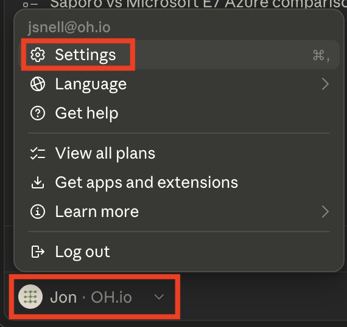
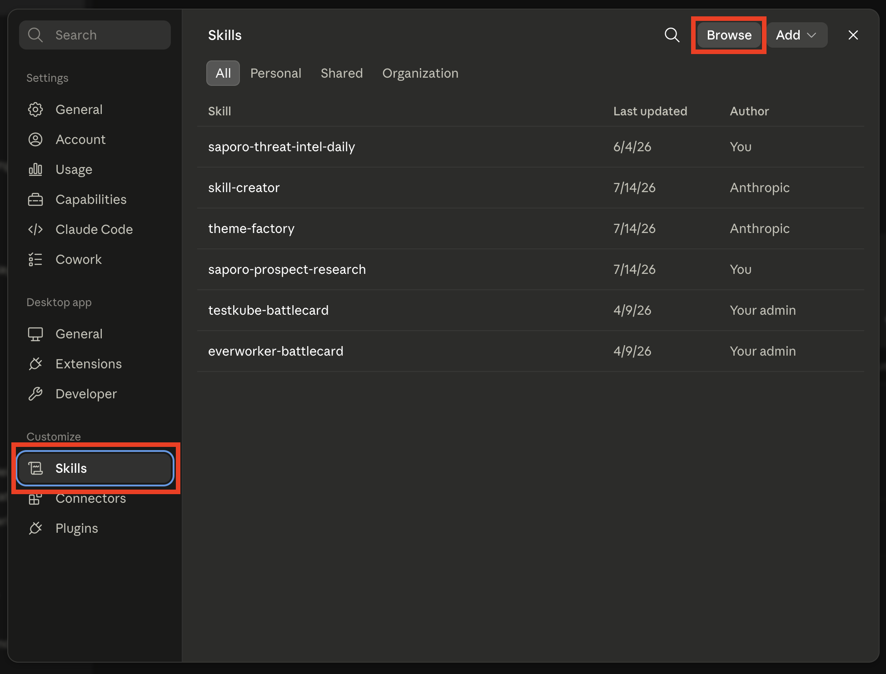
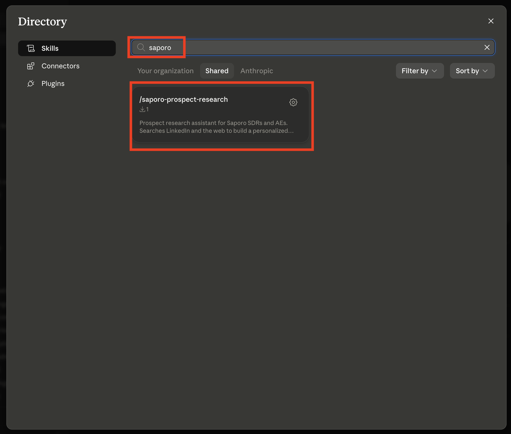

Install a Skill that your organization has shared so it's available across your Claude sessions — no coding required.
Skills are packaged instructions and workflows that extend what Claude can do for you. When someone on the team publishes a Skill to the organization, it shows up in the Shared directory, ready to install. This guide walks through adding one from the Claude desktop app in three quick steps.
Launch the Claude desktop app. Click your account name at the bottom-left of the window, then choose Settings from the menu that appears.

In the Settings sidebar, under Customize, select Skills. This shows every Skill already available to you. To find a new one, click Browse in the top-right corner.

In the Directory, make sure the Shared tab is selected, then type the name of the Skill in the search box. Click the Skill card to open it, then add it.

Tip: The tabs above the search box filter where you're looking. Use Shared for Skills your team has published, Your organization for org-managed Skills, and Anthropic for the built-in library.
Once it's installed
The Skill now appears on your Skills list and Claude will use it automatically when a task calls for it. You can also invoke it on demand by typing a forward slash followed by the Skill name in any conversation, for example /saporo-prospect-research.
To remove a Skill later, return to Settings → Skills, open the Skill, and disable or delete it.